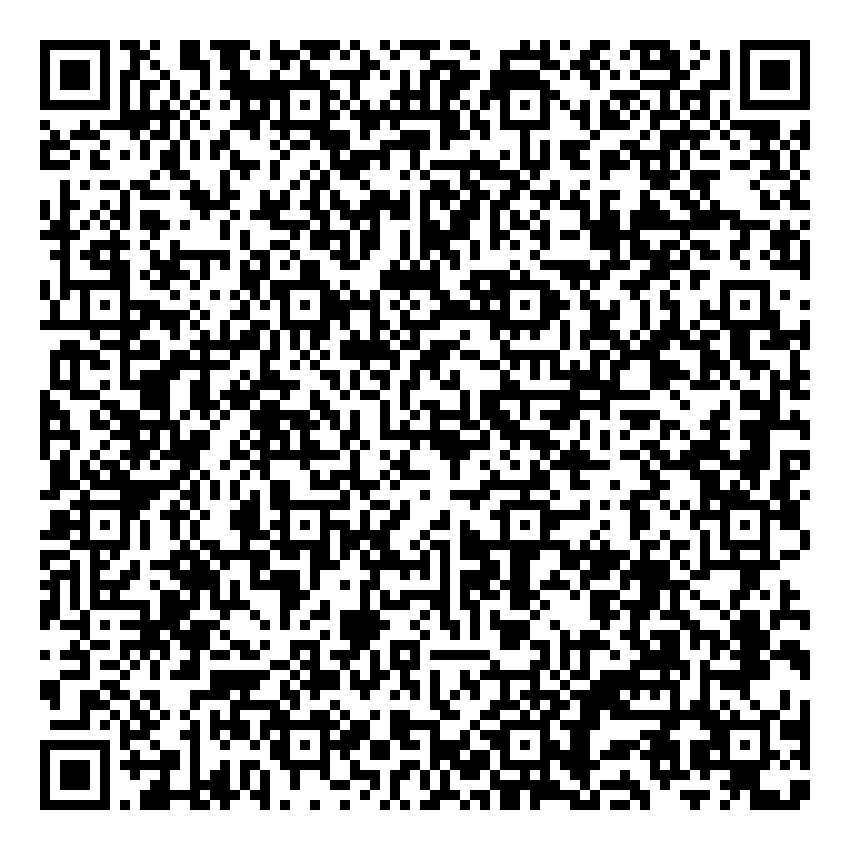

La agenda de Bolivia,
en perspectiva.
Explora el informe diario y consulta las publicaciones de los últimos siete días.
Cargando información…
¿Te resultó útil este informe?
Tu aporte ayuda a mantener MET4TRON activo el próximo mes.
Búsqueda · últimos 7 días
AND, OR, NOT, XOR, NEAR/5, BEFORE/5, paréntesis, * y ?. Campos: texto:, cuenta:, red:, categoria:, departamento:, municipio:, sentimiento:, institucion:, palabra:. Frases de hasta cinco palabras entre comillas.
¿Qué es MET4TRON?
MET4TRON es una aplicación de monitoreo de publicaciones públicas de páginas y cuentas informativas de redes sociales. Ordena noticias de Bolivia y del ámbito internacional y produce un reporte de las últimas 24 horas con una perspectiva de análisis político.
Fue desarrollada por el comunicador popular y analista de datos Gabriel Rodriguez Olivera, conocido como 6abinsky. Integra clasificación temática, distribución territorial, evolución de interacciones y análisis del tono informativo. Sus indicadores describen las publicaciones recopiladas y no equivalen a encuestas de opinión ni a diagnósticos oficiales.
La actualización está programada diariamente para las 20:00 de Bolivia y depende de la recepción de datos y de la disponibilidad del servicio de publicación. Si no hay un lote nuevo, se informa la fecha del último reporte. El portal ofrece búsqueda sobre una ventana móvil de siete días.
Alcance y uso de los datos
MET4TRON está diseñado para analizar publicaciones públicamente accesibles de páginas y cuentas informativas, de entretenimiento, figuras públicas, artistas, periodistas, actores políticos y deportes. No está diseñado para acceder a cuentas privadas, mensajes personales ni contenidos restringidos; no sortea inicios de sesión, CAPTCHA o permisos. La disponibilidad pública no elimina derechos de autor, protección de datos ni condiciones de las plataformas. Los resultados pueden contener errores de clasificación y deben contrastarse con las publicaciones enlazadas. Esta declaración describe el funcionamiento previsto y no constituye una garantía de cumplimiento legal. Para correcciones o retiro, contacta al responsable mediante el canal que se configure en este portal.
Apoya MET4TRON
Esta herramienta nace de la autogestión y la pasión por la política, la comunicación y el análisis de datos. Buscamos reunir Bs. 4.000 hasta el día 19 de cada mes para cubrir trabajo, software, hardware e inteligencia artificial y mantener el acceso gratuito.
Aporta con tu donación

Verifica el destinatario y el monto en tu aplicación bancaria antes de confirmar.
Meta a los 4 mil bolivianos mensuales
El monto es actualizado por el administrador; no se verifica automáticamente con el banco.